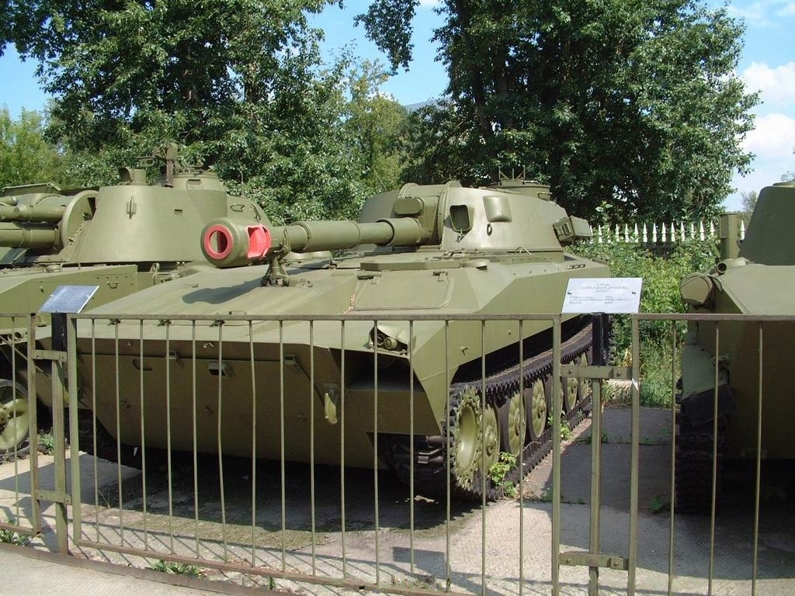

2С1 «Гвоздика» — радянська 122-мм самохідна артилерійська установка на базі шасі МТ-ЛБ, яка призначена для знищення живої сили, артилерійських батарей, дзотів, а також для забезпечення проходів в мінних полях та польових загородженнях. Вікіпедія
- Історія створення
- Серійне виробництво та модифікації
- Конструкція
- Броньований корпус і башта
- Озброєння
- Номенклатура боєприпасів
- Засоби спостереження і зв'язку
- Двигун і трансмісія
- Ходова частина
- Машини на базі
- Радянський Союз
- САУ та бойові машини
- Інженерні та спеціалізовані машини
- Україна
- Інженерні та спеціалізовані машини
- САУ та бойові машини
- Інші
- Радянський Союз
- Оцінка машини
- Бойове застосування
- Війна в Афганістані
- Війни в Чечні
- Придністровський конфлікт
- Югославські війни
- Війни в Іраку
- Громадянська війна в Лівії
- російсько-Українська війна
-
Оператори
- Cучасні
- Колишні
- Україна
- Див. також
- Виноски
- Примітки
- Посилання
Історія створення
В 1945 році завершилась Друга світова війна, до того часу на озброєнні Радянського Союзу перебували в основному протитанкові і штурмові САУ. Основним застосуванням таких САУ був безпосередній супровід піхоти і танків та ведення вогню по ворожих цілях прямою наводкою. Натомість, в західних країнах і США існували САУ, призначені для ведення вогню із закритих позицій. Поступово самохідна артилерія в цих країнах почала витісняти буксировану. Незамінність самохідної артилерії в локальних конфліктах стала очевидна, тому в період з 1947 по 1953 рік було проведено дослідження по створенню нових самохідних гаубиць, проте в 1955 році за вказівкою Н. С. Хрущова більшість робіт по самохідної артилерії було припинено. Деякий час по тому Міністерство оборони СРСР дійшло висновку, що стратегічна ядерна війна малоймовірна, оскільки призведе до знищення обох воюючих сторін. При цьому реальнішими могли стати локальні конфлікти з використанням тактичних ядерних озброєнь. У таких конфліктах самохідна артилерія мала беззаперечну перевагу над буксированою[3][4].
З відставкою Н. С. Хрущова поновились роботи над створенням самохідної артилерії в СРСР. В 1965 році на базі Львівського полігону радянськими військами було проведено масштабні навчання із застосуванням артилерійських установок часів Другої світової війни. Результати навчань показали невідповідність наявних на озброєнні самохідних артилерійських установок вимогам сучасного бою. З метою ліквідації відставання радянської самохідної артилерії від артилерії країн НАТО в 1967 році виходить постанова ЦК КПРС і Ради міністрів СРСР № 609–201 від 4 липня. Відповідно до цієї постанови офіційно розпочалась розробка нової 122-мм самохідної гаубиці для сухопутних військ Радянської армії[3][4][5].
Попередньо ВНДІ-100 виконав науково-дослідну роботу з визначення вигляду і базових характеристик нової САУ. В ході досліджень були опрацьовані три варіанти САУ. Перший — на базі шасі «Об'єкту 124» (в свою чергу, створеного на базі СУ-100П), другий — на базі багатоцільового транспортера-тягача МТ-ЛБ, третій варіант на базі бойової машини піхоти БМП-1[6].
У всіх варіантах основним озброєнням була 122-мм гаубиця з балістикою Д-30[6].
За результатами робіт було з'ясовано, що шасі «Об'єкту 124» має надлишкову вантажопідйомність і масу, до того ж САУ втратить можливість форсувати водні перешкоди уплав. Шасі МТ-ЛБ не вистачало стійкості при стрільбі і необхідного рівня допустимих навантажень на ходову частину машини. Найоптимальнішим варіантом було шасі бойової машини піхоти БМП-1, проте П. П. Ісаков домігся заборони на використання БМП-1 як базового[6]. Тому як шасі було вирішено взяти подовжену і модифіковану базу багатоцільового транспортера-тягача МТ-ЛБ. Отримані опрацювання лягли в основу ДКР під найменуванням «Гвоздика» (індекс ГРАУ — 2С1). «Гвоздика» мала надійти на озброєння артилерійських дивізіонів мотострілецьких полків для заміни 122-мм гаубиць М-30 і Д-30[7].
- Таблиця ТТХ аванпроектів 2С1, виконаних у ВНДІ-100
- База - МТ-ЛБ
- Основнві характеристики
- Екіпаж, чол. - 4
- Бойова маса, т - 15,842
- Озброєння
- Марка гармати - Д30
- Возимий боєкомплект, пострілів - 60
- Кулемет - 1 × 7,62-мм ПКТ
- Боєкомплект кулемета, патр. - 2000
- Рухливість
- Марка двигуна - ЯМЗ-238
- Тип двигуна - дизельний
- Потужність двигуна, к.с. - 240
- Максимальна швидкість по шосе, км/год - 60
- Запас ходу по шосе, км - 500
Головним розробником 2С1 був призначений Харківський тракторний завод імені Серго Орджонікідзе, гаубицю 2А31 (заводське позначення Д-32) проектували в ОКБ-9. В серпні 1969 року перші чотири дослідні САУ 2С1 надійшли на полігонні випробування. Випробування виявили високу загазованість бойового відділення. Водночас, аналогічна ситуація склалась і з 152-мм дивізійною самохідною гаубицею 2С3. Тоді ж для обох самохідних артилерійських установок були опрацьовані картузні варіанти гаубиць. На базі 2А31 була розроблена 122-мм гаубиця Д-16 з картузним заряджанням. Замість клинового затвора, ланцюгового досилача і зарядів в гільзі в Д-16 застосований поршневий затвор, пневматичний досилач і картузні заряди. Проте випробування показали, що недоліки у нової гаубиці Д-16 аналогічні, оскільки як полум'яність пострілів залишилася тією ж, при цьому збереглася та ж купчастість і дальність стрільби. Крім того, була виявлена незручність при роботі з пеналами зарядів, а також конструктивні недоліки пневматичного досилача, в результаті чого, скорострільність залишалася на рівні базової гармати. Подальше вдосконалення конструкції Д-16 призвело до створення модернізованого зразка під індексом Д-16М, який показав збільшення дальності стрільби осколково-фугасними снарядами до 18 км, завдяки збільшеній каморі і застосуванню потужніших картузних зарядів
В 1971 році у 3 ЦНДІ в рамках НДР «Розвиток» були розглянуті та проаналізовані результати робіт з картузними варіантами 122-мм і 152-мм гаубиць. Попри отримані показники, 3 ЦНДІ дав висновок про недоцільність ведення подальших досліджень картузного варіанту гаубиці 2А31. Основною причиною стала відсутність на той момент технічного рішення, що дозволяло створити і ввести в експлуатацію надійні і безпечні заряди в жорсткому картузі або гільзі, що згорає. Науково-технічний заділ по проведеним дослідженням було рекомендовано використати при створенні нових 122-мм осколково-фугасних снарядів з поліпшеною аеродинамічній формою. Проблема ж загазованості бойового відділення САУ 2С1 була вирішена іншим способом, а саме, застосуванням потужнішого ежектора і гільз з поліпшеною обтюрацією. В 1970 році постановою ЦК КПРС і Ради міністрів СРСР № 770–249 від 14 вересня, після доопрацювань, самохідна артилерійська установка 2С1 «Гвоздика» була прийнята на озброєння Радянської армії[5][8][9]. В 1972 році пройшла державні випробування і була прийнята на озброєння парашутна платформа 4П134, яка мала польотну масу з вантажем до 20,5 т. На цій платформі за допомогою пятикупольної парашутної системи ПС-9404-63Р планувалося здійснювати десантування самохідних гаубиць 2С1. Система у складі платформи 4П134, парашутної системи ПС-9404-63Р і САУ 2С1 пройшла повний цикл випробувань, але на озброєння ВДВ не надійшла у зв'язку з розробкою 122-мм самохідної гаубиці 2С2 «Фіалка»[10].
Серійне виробництво та модифікації
Серійне виробництво почалося в 1971 році і завершилось наприкінці 1991 року, крім СРСР, САУ 2С1 випускалася за ліцензією в Польщі з 1971 року й Болгарії з 1979 року. В процесі випуску польський варіант «Гвоздики» зазнав змін. Варіант 2С1М Goździk мав дизельний двигун SW680T, нові опорні котки і змінені гідродинамічні щитки для руху по воді. САУ 2С1 болгарського виробництва надходили на озброєння Радянської армії і, крім гіршої якості виготовлення, нічим не відрізнялись від радянського зразка 2С1. Всього за роки виробництва було виготовлено понад 10 000 одиниць 2С1. Після припинення виробництва, у Польщі та Росії були розроблені модернізовані варіанти. В Росії розроблена модернізована версія 2С1М1 з установкою АСУНО 1В168-1, у Польщі розроблена версія 2C1T Goździk з установкою АСУНО TOPAZ. У 2003 році розроблено, а з 2008 року надійшло на озброєння Російської армії самохідна артилерійська гармата 2С34 «Хоста», що представляє модернізацію САУ 2С1, гаубиця 2А31 була замінена гарматою 2А80-1. Крім того, на башточку командира встановлений 7,62-мм кулемет ПКТ[7][15]. У 2008–2009 роках польським військово-промисловим комплексом створена дослідна модернізація САУ 2С1 під позначенням Rak-120. Гармата 2А31 була замінена на 120-мм гладкоствольний міномет, обладнаний автоматом заряджання. Возимий боєкомплект збільшений з 40 пострілів до 60, проте будь-які дані про початок серійного виробництва цієї модифікації відсутні.
Крім базових модифікацій, вироблених в СРСР і Польщі, існують інші версії САУ «Гвоздика». В Румунії в 1980-х роках розроблений варіант САУ 2С1, що отримав позначення Model 89. Від 2С1 він відрізняється базовим шасі. Замість модифікованої бази МТ-ЛБ використано шасі БМП MLI-84[16]. У 1996 році Іранським військово-промисловим комплексом була виготовлена, а з 2002 року запущена в масове виробництво 122-мм самохідна гаубиця Raad-1. Від 2С1 іранська САУ відрізняється базовим шасі, замість МТ-ЛБ використана іранська БМП Boragh
Конструкція
Броньований корпус і башта
Самохідна гаубиця 2С1 «Гвоздика» створена за класичною для самохідної артилерії баштовою схемою. Корпус машини зварений із сталевих броньових катаних листів, повністю герметичний і дозволяє долати водні перешкоди уплав. Корпус розділений на три відділення: силове (моторно-трансмісійне), відділення управління і бойове.
У передній частині корпусу по правому борту розташоване моторно-трансмісійне відділення. Зліва від нього знаходиться місце механіка-водія з органами управління шасі. У середній і кормовій частинах корпусу знаходиться бойове відділення. На даху корпусу на кульковий погон встановлена зварна башта з обертовим кошиком бойового відділення. У башті встановлена гармата, а також місця екіпажу. По правому борту розміщується сидіння заряджаючого, а також укладка під гільзи з набоями, по лівому борту в передній частині башти встановлено сидіння навідника і прицільні пристосування. За навідником знаходиться місце командира САУ.
Місце командира обладнано поворотною башточкою, встановленою на даху башти. У ніші башти встановлено дві укладки з набоями і снарядами для кумулятивних боєприпасів. У кормовій частині корпусу встановлені укладки під снаряди і набої основної гармати. Подача в укладки може здійснюватись з ґрунту через спеціальний кормовий люк. Бронювання САУ 2С1 забезпечує протикульний і протиосколковий захист екіпажу. Товщина листів корпусу та башти досягає 20 мм[
Озброєння
Основним озброєнням САУ 2С1 є 122-мм гаубиця 2А31. Гармата повністю уніфікована за балістичними характеристиками і використовуваним боєприпасів з 122-мм буксованою гаубицею Д-30.
Ствол 2А31 складається з труби, задок, ежектора і дульного гальма. Довжина труби становить 4270 мм. На внутрішній частині ствола на відрізку 3400 мм зроблено 36 нарізів з прогресивною крутизною від 3°57' і до 7°10'. Довжина зарядної камори дорівнює 594 мм. Повна маса ствольної групи — 955 кг. Затвор гармати вертикально-клиновий, оснащений напівавтоматичним механізмом повторного взведення.
На клині встановлений лоток з утримувачем, який запобігає випадання снаряда із ствола на великих кутах піднесення, а також полегшує ручне заряджання. При відкритті затвора, утримувач автоматично топиться в клин і не перешкоджає екстракції гільзи. Повна маса затворної групи дорівнює 35,65 кг. Противідкітні пристрої складаються з гідравлічного гальма відкоту веретенного типу заправленого рідиною «стеола-М» або «ПОЖ-70» та пневматичного накатника, заправленого азотом або повітрям.
Для стравлювання тиску при роботі в різних температурних діапазонах, на відкітному гальмі встановлений компенсатор пружинного типу. Циліндри гальма відкоту закріплені в задок гармати. Максимальна довжина відкоту дорівнює 600 мм. Труба гармати скріплена з люлькою, що складається з двох обойм. У передній обоймі знаходиться кожух із закріпленими циліндрами противідкітних пристроїв.
У середній частині розташовані кріплення для бронемаски з цапфами. До задньої частини люльки змонтовано огорожу. На правій щоці для командира є механізм блокування ручного спуску гармати, на лівій — система важелів з ручним спуском. Між щоками встановлена відкидна частина огорожі з електромеханічним механізмом досилання.
Номенклатура боєприпасів
До основного боєкомплекту гаубиці 2А31 входять осколково-фугасні снаряди 3ОФ56 і 3ОФ56-1[вин 2] з контактним
детонатором РГМ-2М, 3ОФ7 і 3ОФ8[вин 3] з радіопідривачем АР-30, а також снаряди 3ОФ24, 3ОФ24Ж[вин 4], 53-ОФ-462
і 53-ОФ-462Ж[вин 5], які можуть комплектуватися як контактними підривниками РГМ2 або В-90, так і
радіопідривниками АР-5. Снаряди мають початкову швидкість на повному заряді 690 м/с і максимальну дальністю
стрільби в 15,2 км.
Для 2С1 створені керовані снаряди «Китолов-2М», що мають можливість ураження бронетанкової техніки в місцях
зосередження пускових установок, довготривалих оборонних споруд, мостів та переправ.
Крім того, передбачено використання освітлювальних і димових снарядів, а також снарядів-постановників
радіоперешкод.
Для боротьби з броньованою технікою в штатному боєкомплекті 2С1 є 5 кумулятивних обертових боєприпасів 3БП1.
Боєприпас здатний
пробивати 180-мм гомогенну броньову сталь на відстанях до 2 км.
Крім того, стрільба по броньованим цілям
може
вестися необертовими кумулятивними снарядами 3БК6 і 3БК13 (пробивають відповідно 400 і 460 мм гомогенної
броньової сталі).
Для боротьби з живою силою супротивника в боєкомплекті САУ 2С1 є шрапнельний снаряд 3Ш1,
оснащений вражаючими стрілоподібними елементами, які при розриві боєприпасу розлітаються під кутом 24°.
Крім того, для 122-мм гаубиць М-30 і Д-30 в СРСР були створені осколково-хімічні та хімічні снаряди, споряджені
різними отруйними речовинами.
Для підвищення максимальної дальності стрільби в Хорватії був створений новий 122-мм артилерійський снаряд M95
із зарядом «super charge», завдяки якому снаряд розганяється до 718 м/с і має максимальну дальність стрільби в
17,133 км. У 1997 році був створений активно-реактивний осколково-фугасний 122-мм снаряд з готовими нарізами,
що дозволяє збільшити максимальну дальність стрільби 2С1 до 21,9 км.